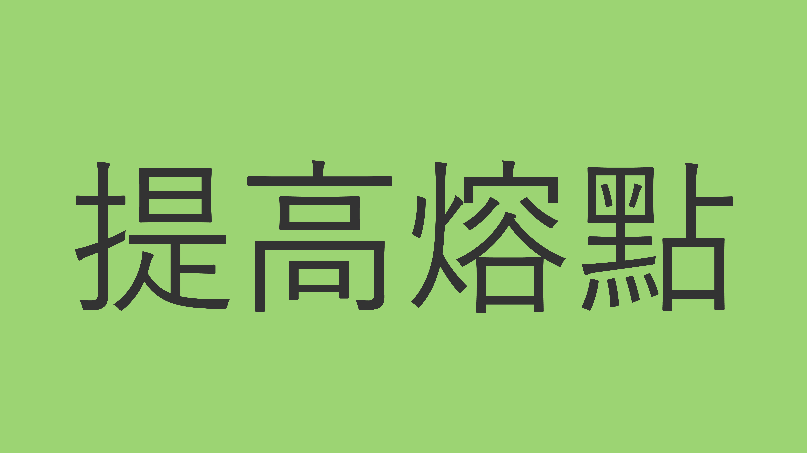
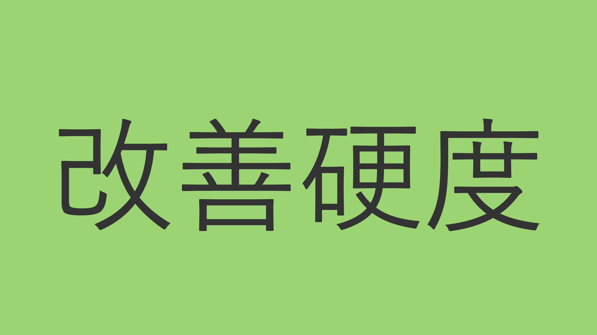
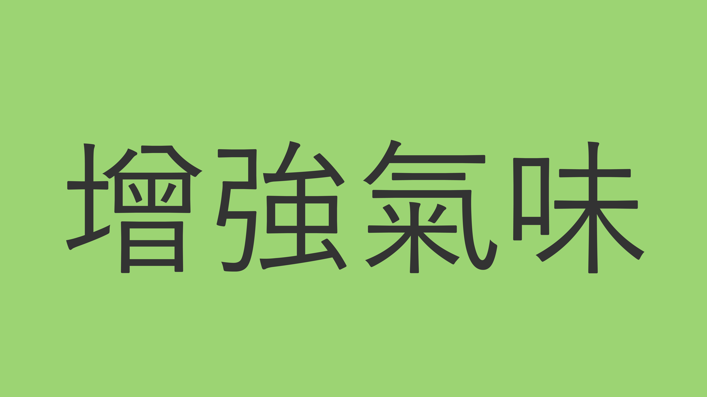
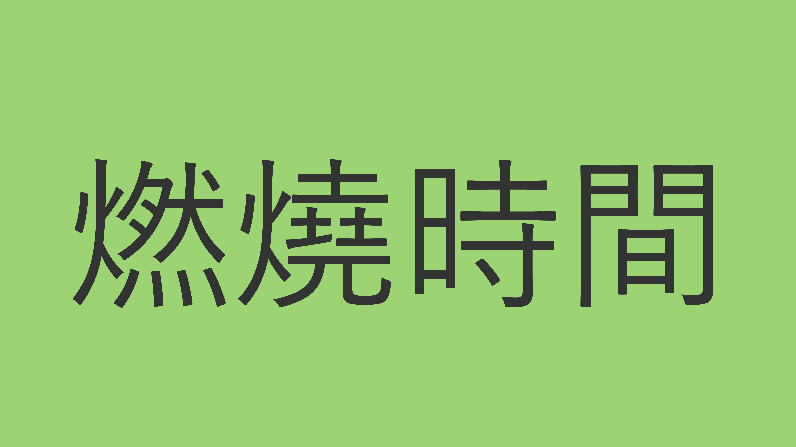
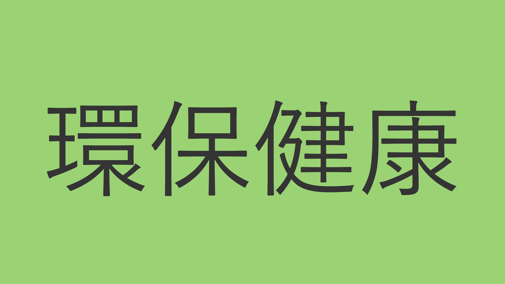

蜂蠟的熔點較高，可以提高蠟燭的整體熔點，防止蠟燭在高溫下過度軟化、變形或者溢蠟。

大豆蠟和蜂蠟的比例可以根據需要進行調整，蜂蠟可以增加蠟燭的硬度和強度，避免蠟燭在使用過程中容易斷裂或折斷。

蜂蠟具有天然的甜蜜香味，可以為蠟燭增添自然的氣味，而大豆蠟則可以幫助吸附其他香料的氣味，讓蠟燭的氣味更加持久。

蜂蠟和大豆蠟的混合可以提升蠟燭的燃燒時間，使得蠟燭可以更長時間地燃燒，並且燃燒更加穩定。

大豆蠟和蜂蠟都是天然材料，經過適當的處理和加工可以製作出環保、無毒、健康的蠟燭，不會釋放出有害物質，對人體和環境更加友好。